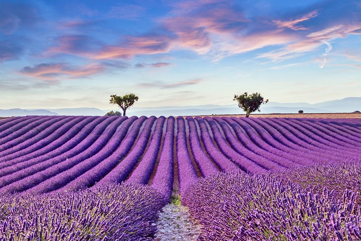

The French capital is one of the most romantic cities in Europe and one of the world's most visited cities. There are endless reasons to visit Paris repeatedly. Paris is a beautiful and cultural city, very walkable, with great sights, and it has been a source of inspiration for many writers, artists, and filmmakers. People call Paris “the City of Love” because of the romantic atmosphere it exudes. In fact, The City of Love isn't just a random nickname given to Paris; it's the perfect description anyone who visited the French capital would give to the city for all the romantic vibes they find there.

Provence is a gorgeous landscape of olive groves, sun-drenched rolling hills, and deep purple lavender fields, with little villages nestled in the valleys and perched on rocky outcrops. The vibrant scenery has enchanted many famous artists, including Cézanne, Matisse, Chagall, and Picasso. The rustic natural beauty and country charm of Provence immerses visitors in a place where the art de vivre is a way of life. Sultry weather encourages leisurely strolls along cobblestone streets and afternoons spent on sunny terraces of outdoor cafés. Provence is also a region known for its delicious cuisine, which is based on olive oil, vegetables, and aromatic herbs.

In a stately palace that was once a royal residence, the Louvre ranks among the top European collections of fine arts. Many of Western Civilization's most famous works are found here, including the Mona Lisa by Leonardo DaVinci, the Wedding Feast at Cana by Veronese, and the 1st-century-BC Venus de Milo sculpture. The collection owes its wealth to the contributions of various kings who lived in the Louvre. Other pieces were added as a result of France's treaties with the Vatican and the Republic of Venice, and from the spoils of Napoléon I.

Versailles was designed to show off the glory of the French monarchy. "Sun King" Louis XIV transformed his father's small hunting lodge into an opulent palace with a sumptuous Baroque interior. The palace became Louis XIV's symbol of absolute power and set the standard for princely courts in Europe. Architect Jules Hardouin-Mansart created the elegant Baroque facade and lavish interior of the Château de Versailles, which is designated as a UNESCO World Heritage Site. The most emblematic space in the castle is the Hall of Mirrors, where courtiers waited for an audience with His Majesty. This dazzling hall sparkles with sunlight that enters through the windows and is reflected off massive ornamental mirrors.